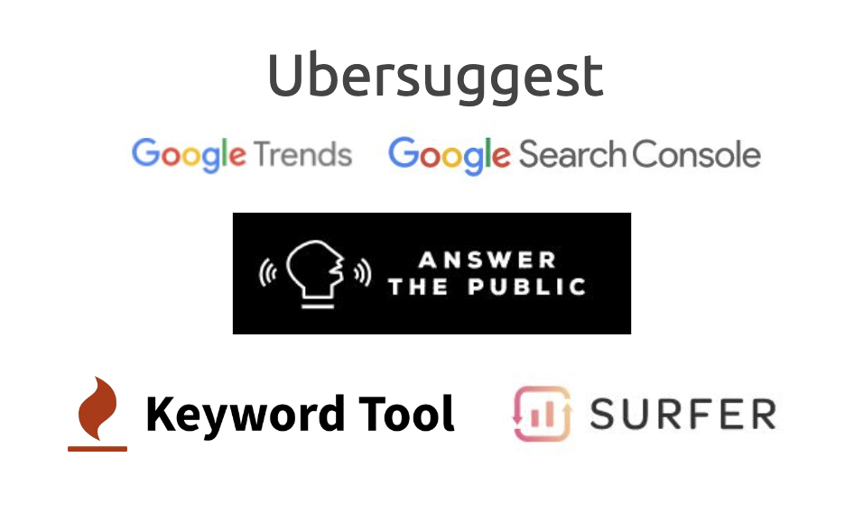
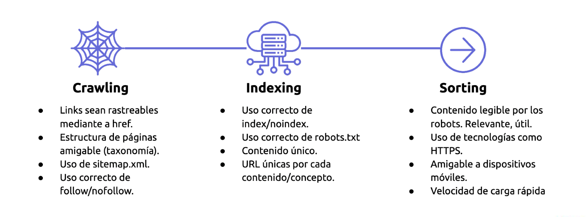
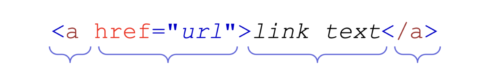
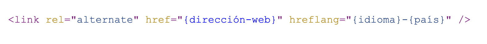

Trying to begin this post in a relaxed way for our dear readers and based on the topic to which we will address, we begin by paraphrasing the famous work of William
Shakespeare -Hamlet, Prince of Denmark “To be or not to be, that is the question” This phrase is the first line of a monologue by the character Hamlet. The phrase is
considered one of the most famous in universal literature.
SEO for those who do not know what it is, we will take a definition from the book THE AVC OF DIGITAL MARKETING by Raquel Oberlander and Roi Shahaf. SEO,” a series of
actions that aim to improve the positioning of a website in a search engine. The better a site is positioned, in the first places of the results, the greater number of
views it will receive” Planeta Edition- Montevideo-Uruguay - Second edition February 2023.
So, after breaking the ice. SEO or not SEO. Years ago it was said that SEO would disappear, but how many times have we entered a page where the content is bad or does
not directly represent what we are looking for.
RELEVANCE and AUTHORITY are two important words to generate organic content on the web, these concepts translate into whether our readers recommend and consider
RELEVANCE what we publish or post on the web-social networks.
SEO tries to optimize our content based on a number of techniques and tools that will help us to ensure that algorithms or search engines find thousands quickly.
organically, (without paying) that's what Google ads is for. Google ads is a platform that allows you to pay for ads to position your service or product, paying through
what is defined as PPC or cost per click.
There are different types of campaigns within the platform such as: Search campaign, display campaign and Google Shoppoing. We gave this brief definition so that you
can roughly differentiate what Google Ads and what SEO does. We will address the world of paid ads in another blog post.
Returning to the topic we came to develop, SEO specifically involves what we know in digital marketing as Key Words, this refers to how our users search, what questions
they ask when searching, as we mentioned at the beginning of this post. , relevance and authority.
There are different tools that allow us to verify how the user searches. Example
Keyword Surfer
(a Chrome extension). When entering any keyword it will return two
numbers. The first indicates the total of global searches throughout the world, and the second the volume in the region that you indicate.
Here we leave a small image of basic and free tools to search for keywords. This happens when ideas run out and we have to turn to technology to support us. In my
opinion, common sense also plays a lot here since you are also a buyer, you would be surprised to see how users search. Spelling mistakes play a major role or the
misspelled brand name can affect how the user searches for us.

Users search for information on the Internet to satisfy their needs or to find solutions to a specific problem, purchase a product, contract a service, among others.
In general terms, searches can be divided into three types:
✔Informational search: The user searches for information on a specific topic.
✔Navigational search: The user wants to visit a specific site or page.
✔Commercial search: The user wants to buy a product or service.
✔Search intents typically match where users are in the marketing funnel:
Awareness: The user searches for informative keywords.
✔Consideration: The user searches for commercial keywords.
✔Conversion: User searches for transactional or navigational keywords
Three Phases that help positioning:

Written content is a very important factor in SEO, but so are images. There is the ALT attribute that is used to include descriptive text on an image, providing
information about its appearance, essential if it does not load correctly on our website. It helps our SEO to provide as much information as possible to Google so that
it can understand our content and, therefore,show it to users.
Another important factor to have good functioning at a basic level of SEO on our website is that the robots.txt file is correct. This is a plain text file that tells
earch engine crawlers which URLs on a site they can access. Robots.txt files are part of the Robot Exclusion Protocol (REP), a group of web standards that regulate how
robots crawl, access, and index content.
Links are essential for web navigation, they allow users to jump from one page to another and navigate sites effectively.
Links are important for web positioning, since they provide information to search engines about the content and objective of the page, helping the search engine to
position it appropriately. In an adequate digital marketing strategy, you must consider the optimal combination of internal, external and incoming links, in order to
keep the site optimized and improve the user experience.

Links also provide navigation paths for spiders or robots, but more importantly, for visitors. These routes tell robots which content or important sites we want to index.
This hreflang attribute is an HTML programming language element that tells search engines the target language and region of a web page. This allows search engines,
such as Google, to show users the most appropriate version of the page based on their language and country preferences.

Hreflang is important in SEO, it helps ensure that the right audience visits our page. For example, in Uruguay and Argentina there is a company called BuqueBus (Ferrie),
this company is dedicated to transporting people between the two countries.
Here those who enter from one country or another can view the prices in the currency that corresponds to each one, it seems something simple but extremely important
for our users. In order to implement hreflang, you must place as many tags as your website has languages in the